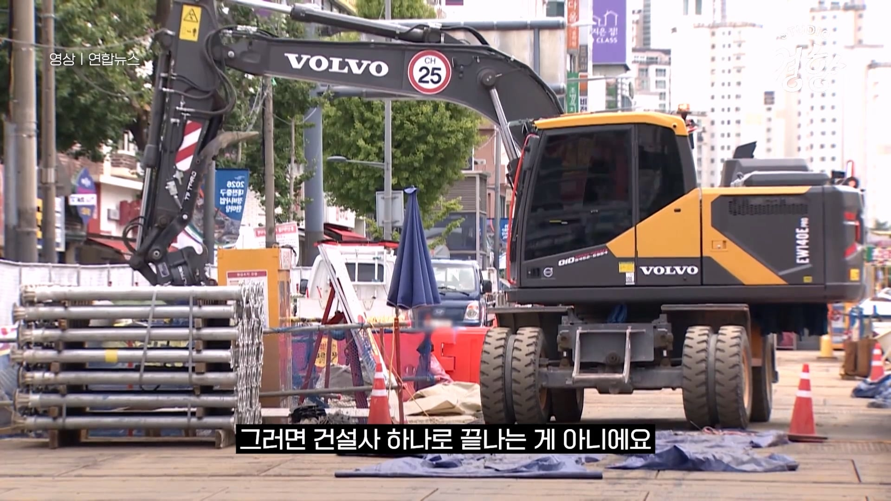
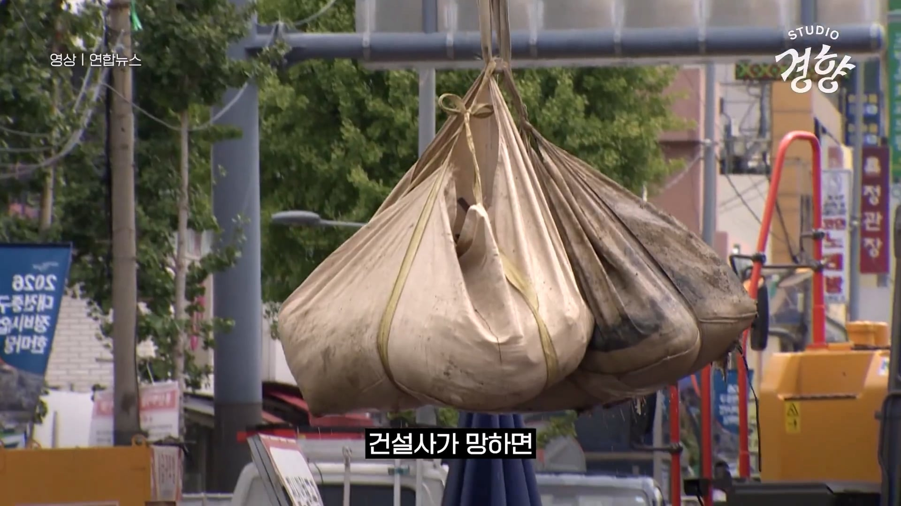
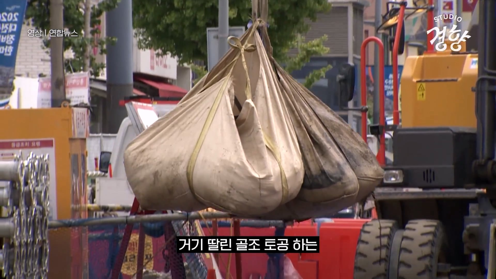
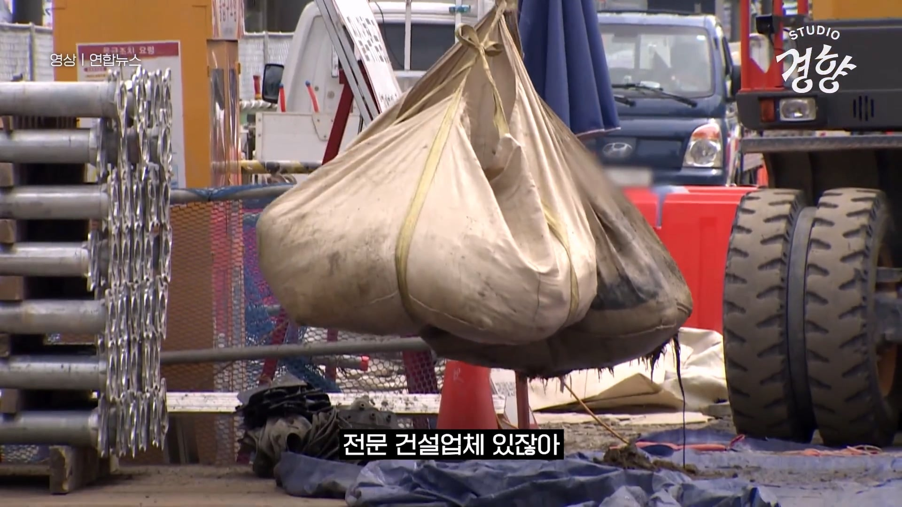
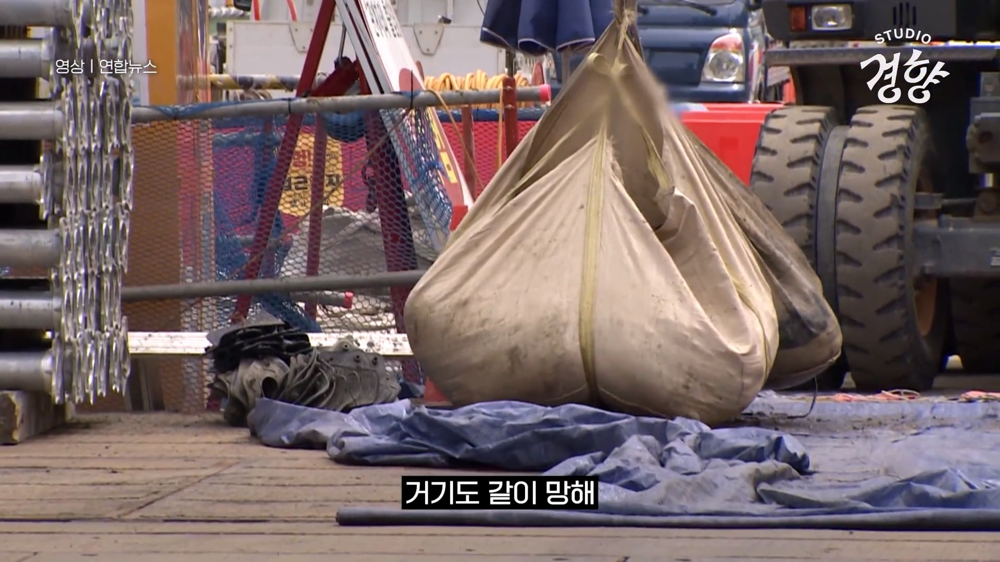
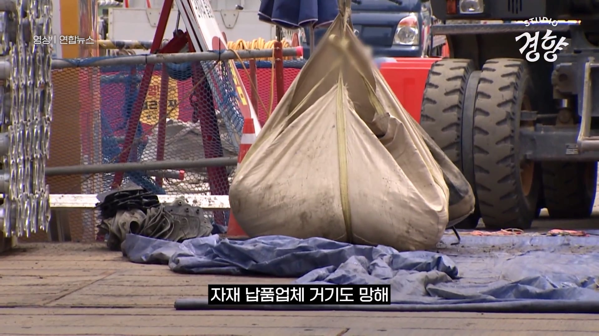

논리는 알겠는데 그러면 불공정계약이랑 하도급 똥떼먹기 같은 문제를 해결해서 투명한 시장을 만들려고 노력을 해야지
그렇다고 메이저건설사에서 직고용을 할 리스크는 지기 싫은거지 난 이건 좀 고쳐야된다고 보긴 하는데
그럼에도 신포도 먹는거임.. 어쩔수없어 사회적 안전장치가 필요는 해...
건설은 토목+건축+철거+인테리어+자재+물류운송+기름+인력+지역식당 등등 수 많은 산업과 얽혀 있는 구조임
건설이 망하면 건설만 망하고 끝나는 게 아니라 연관된 이 수많은 산업들이 타격을 받음
그 상태로 오래 지속 되면 업체들 다 줄도산 하고 관련 산업들 해외 업체한테 죄다 뺏기고 다시 돌려 놓을 수 없게 됨
이러니까 정부에서도 기를 쓰고 막으려 하는 거
인터넷 일침병자들 안중에는 없는 얘기지만..
진짜 수많은 산업생산물의 최종 사용처라서...
좆된 거 같다. 진짜 좆 된거 같어... 현장이 기공이 찾아와서 일 없냐 하는 경우는 못봤는데..
올해 처음 봤다 .
우리나라도 기업이 배째라고 배까고 어퍼져잇으면 칼로 배를 한번 갈라보는것도 나쁘지 않은거같다
보닌 건설업 끝자락 몇차 하청인지도 모르겠는데
공사비 지방 평단가 3억할때보다 훨씬 낮은수준으로 깍였음 1차부터 나까지 다깍인건데 자재비 그대로에 인건비 .5정도 오른수준에서 분양가는 배넘게 뛰었는데 그분양가 대체 누가가져가는건지 모르겄어 요새는 걍 개인사업으로 프리뛰는 나같은 자영업자보다 걍 일당뛰는 기공이 돈더벌어감 ㄹㅇ 늙은이들 은퇴하면 일감좀늘겠지 다른애들 고꾸라질때 나는 안고꾸라지면 일감좀 늘겠지 숨통트이겠지 하면서 한해 버티는데 요새 증말 어렵긴함 참고로 14년도부터 노가다했고 16년도에 개인사업자내고 프로랜서로 뜀
금융이 제일 이익보는듯 하고
어차피 발주단가 자체가 문제잇고
거기다 재료비 인건비 오르는 폭보다
반영시점이 늦는것도 글코
하여간 노가다판이 그나마 낫긴한데
나도 언제까지 버텨질지 확신이 안섬 ㅋㅋ
아니지 시공단가 자체가 18년도 이전단가로 가니까 사람을 쓸수도없는구조가됨 반영한게 그거야
쿠팡이 있어서 덜하긴 하지만, 아직도 기술없는 일용직으로 연명하는 사람이 많긴함
빅토리아3에서도 건설 멈추면 경제 좆망하더라
지역경제가 잠깐 망하더라도 악습을 끊으면 결과적으로는 경제가 더 건강해지는건데, 자기임기동안에 그런일 일어나는거 못보는 선출직들이 절대 허용하지 않음
ㅋㅋ 이걸 잠깐망이라고하네 ㅋㅋ
뭘 악습이라 하는거임 건설사 살리는거?
글케 따지면 중소기업 왜 살리냐 잠깐 망해도 경제가 건강해지는디
철강 조선업도 휘청일때 왜 국비부었냐 경제가 건강하게 뒀어야 하는데
옛날 하이닉스도 동전주 감자 처할때 걍 망하게 두지 왜
건강해짐 (이미 다 굶어 죽어있음)
잠깐이 아닐 거 같은뎅;
잠깐 망하는 순간 우리 손을 떠나서 문제 아님?
뭐.... 사망하면 더 이상 아플 일이 없긴 하지....
둔촌주공 사례 생각하면 뭐 답이 나옴
건설사들이 망하면 사장들이 굶어죽는게 아님.
사장들은 자기 먹고살 기반은 다 만들어놨다.
땅이든 건물이든.
당장 굶어죽는건
별다른 기술없어서 매일 새벽 인력사무실 문두드리는 서민들이 할일이 사라져서 빈손으로 돌아가는거임
사실상 좀비기업들이지 ㅋㅋㅋ
선분양제도라 조까튼 거임
이새끼들이 자기 자본 쥐뿔도 없이
공사 시작해서
배째고 눕기 시작하면
하청에 하청 노동자 및 관련 사업주들
다 좆대버리니 놔둘 수가 없는 거지
그러니 사업성이고 뭐고 허가나고 돈 빌려서 사업성 평가도 좆도 안하고
막 지어대는거지
그 결과가 공실 천지 지산, 거북섬 같은 상가 단지로 나타나는 중임
그래서 아 나 힘들어요 이러면
국가에서 은행 달래서 pf 정리하고
그건 그거대로 공적자금 투입해서 막아주고 ㅋㅋㅋ
애초에 정치권도 개입된 문제임
선분양 자체가 못살던 시대에 만들어진 제도인데
왜 건설사 및 시행사만 배불리게 하려고 아직도 운영중인지 노이해..
후분양으로 비싸게 시세대로팔면 싫어하실거잖아요...
총맞아 디질 수 있는 위험을 감수해도 내가 총을 가질 수 있는 걸 택하는 총기자유화 같은거지.
할라면 다 같이 후분양을 해야 시장이 그 기준으로 평형점을 찾을텐데 선분양을 하면 사람들이 저 리스크를 지고도 기꺼이 돈을 내니까.
비싸면 안 사면 되지 뭔 걱정이누 ㅋㅋㅋ
사실 기업도 국가도 국민도 후분양하고 싶은 생각 별로 없음
건설사가 은행 돈빌려서 지으면 그 공사동안 들어가는 금융이자에 그 사이 상승한 토지비, 감정평가액, 자재비 인상분, 물가 상승률에 안팔렸을 때 건설사기 부담해야하는 리스크테이킹 비용까지 전부 집값에 다 녹는 거라서 집값 상승이 감당이 안되니까 정부가 틀어막는 거임
당장 내가 2년전에 본 집값이 이 정권에서 같은 지역인데 2배 뛰었다 숫자로만 보면 표심이 개박살나는데 누가함
그렇다고 그거 들어간 공사값 뻔히 다 아는데 분양가 상한제는 수분양자의 자금으로 리스크없이 사업을 하는 특혜를 주었으니 분양가를 통제한다는 명분이 있음
근데 건설사가 자금 모아서 알아서 지어버린 후분양에 분양가상한제를 적용하면 '건설사야 네돈으로 지어서 싸게 주택 사람들한테 뿌려라 안팔리면? 몰루 알아서해'인데 누가할 거야 그렇다고 분상제없으면 풍선효과로 인기 지역 집값은 그냥 승천해버림
한국 건설사 대다수가 자체 자본금 빈약해서 연쇄부도도 위험함 건설사도 마진 낮추는 이유가 일단 선분양이 기본 완판이라서 재고 리스크 zero + 빠른 자금 회수'라는 안정성 하나 때문인데 후분양은 하방이 없어서 어어 하다간 건설사 바로 망해버림 그러니 100% 확실하고 큰 이익 안남을 공사는 전부 포기해서 주택공급이나 건설산업 안정화가 박살남
게다가 구매자들 입장에서도 선분양하면 10% 계약금들고 2~3년 쪼개서 나눠내지만 후분양하면 8~90% 뭉칫돈 몇 달 정도 안에 완납하란 얘기라 운용자금이 씨가 마름
현금여유가 있는 자산가나 현금 부자만 신축 아파트 사라 이소리라서 서민층이 아예 돌아설텐데 절대 못하지
그렇다고 후분양으로 유도하려고 제도를 뜯어고치려면 얼기설기 엮인 구조때문에 정책 하나 둘 손대서 될 게 아니고 건설업의 전반적인 산업구조뿐만 아니라 은행권과 금융구조 역시 대혁신 해서 투트랙으로 가야되는데 말이 쉽지 금융을 건드린 때부턴 건설업만 고려할 게 아니라 나라 자체 체질을 싹 바꾸잔 거라 모든 산업을 고려해야함
대한민국 정도 경제규모가지고 전속력으로 달리고 있는 나라에서 금융구조 변경은 이제 양당제 발목잡기 안에서는 절대 불가능하고 군사독재 아닌 이상 서브프라임 모기지급 대사건이 한 번 일어나야 바뀜
그냥 은행들이 PF부실로 건설사 대출 규제히고 금리 좀 올리는 거로는 후분양이나 자기자본 주도로 해야겠다하고 건설사 마음을 이양하는 게 아니라 목조르기밖에 안됨
정말 바꾸고 싶으면 난 돈을 더 내도 괜찮으니 좋은 품질의 건물을 얻고 싶다는 사람이 대다수라 후분양을 지지하고 건설사 보증제도를 요구하는 국민적 합의가 이뤄져야하는데 집값 2~3배 더 내겠다는 그 주장에 국민 몇이나 동의할지는 몰?루
오 길게 잘 설명해줘서 지식+1 배워감
내수경제 ㅈ되고있긴함
건설이 연관 산업도 제일 많고 고용계수도 엄청 높음 그리고 타 제조업의 생산유발효과도 꽤 높은데다가 대부분 국내자본 및 자재 비율이 타 제조업 대비 높은편이라 아무래도 건설이 살아나야 좋음 역으로 또 건설이 박으면 다른것도 다 같이 박음
통일 되면 건설업 주가 얼마나 뛸까?
하이닉스, 엔비디아 이상으로 뛰겠지?
못해도 반 세기 동안 먹고 살 거리 나올 듯
별걱정을다하네 ㅋㅋ
인프라 유지보수도 건설인데 단순 아파트만 있는게 아니긴함
빨리 북진 통일 해서 건설 경기 부흥 시키자
구라임
위에 두어개 무너져도 인력이 사라지는건 아니라 잘 굴러간다. 유지보수, 건설 용역들 대부분 경쟁입찰이라 경쟁이 느슨해지거나 다른 새로운 업체 진입 기회일 뿐임.
밀린 돈 못 받는게 짜증나는거지
건설 건축은 인류가 동굴에서 나온 이후부터 연속된 산업이라 온갖 개ㅈ같은 부조리와 악습, 폐단도 연속되고 있다고 보면 된다.
건설업계 죽는다~~~하는 새끼들은 내 꿀단지 깨진다구요~~~하는거하고 같다고 해석하면 된다.
중간중간 꿀빠는 새끼들이 계속 끼어있는게 관행이 됐지.
그럼 서울에 집 존나 지으면 되잖아.
공원이나 녹지 싹 밀어버리고 집지으면 건설사도 안망하고 서울에 집이 많아지니까 서울집값도 떨어져서 서울에 살려는 사람도 좋아지고.
돈 많이 못처먹는걸 망한다고 표현하네.
저러니까 존나 배짱장사하는거잖아 ㅋ ㅋㅋㅋ